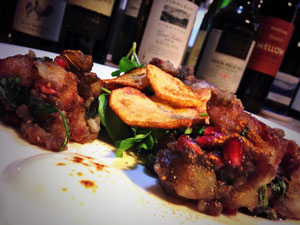

Karara Aloo Chaat (crisp potato salad)
Ingredients
- For the sweet yoghurt foam
- 250g/9oz yoghurt
- 50ml/2fl oz single cream
- 50ml/2fl oz sugar syrup
- siphon with two charges
- vegetable oil, for shallow and deep frying
- 500g/1lb 2oz King Edward potatoes, peeled and cut into large cubes
- 100g/3oz purple or Peruvian potatoes, thinly sliced using a mandoline
- 100g/3oz granulated sugar
- 2 tbsp mango powder
- 1 tsp mild Kashmiri chili powder or sweet paprika
- 1 tbsp black salt (kala namak)
- 1 tsp toasted cumin powder (seeds toasted and ground to powder)
- 1 tsp ground ginger
- 1 tsp powdered fennel seeds
- salt, to taste
Preparation method
For the yoghurt foam, mix the yoghurt, cream and sugar syrup together. Put the mixture into a siphon bottle, making sure the bottle is at least half full, and charge with two nitro cartridges. Keep the bottle chilled for two hours before using. For the Karara aloo chaat, in a frying pan heat a little vegetable oil and fry the King Edward potatoes in medium hot oil until almost cooked. Remove them from the pan and put them on a tray lined with kitchen paper. Place another layer of kitchen paper on top and press them flat. Fry them again to make them light brown in color and crisp. Remove and drain on a tray lined with kitchen paper. Fill a deep-fat fryer or a large, deep, heavy-bottomed pan two-thirds full with vegetable oil. Heat the oil to 180C/350F (use a probe thermometer to check the temperature if you're not using a deep-fat fryer). (CAUTION: Hot oil can be dangerous. Don't leave unattended) Deep fry the Peruvian potato slices to make crisps. Sprinkle with sea salt and set aside until needed. For the spicy chutney, mix 100ml/3fl oz of water with the sugar in a small pan and bring to the boil. Add the rest of the ingredients and simmer for 4-5 minutes, or until you have a fairly thick chutney. Add water to thin down, if required. To serve, toss the fried hot potatoes with the pomegranate seeds, coriander and 2-3 tablespoons of chutney. Place on a plate in 3-4 small clusters. Pipe the yoghurt foam in between and garnish with purple potato crisps, mint and watercress. Sprinkle with chaat masala and red chilli powder.